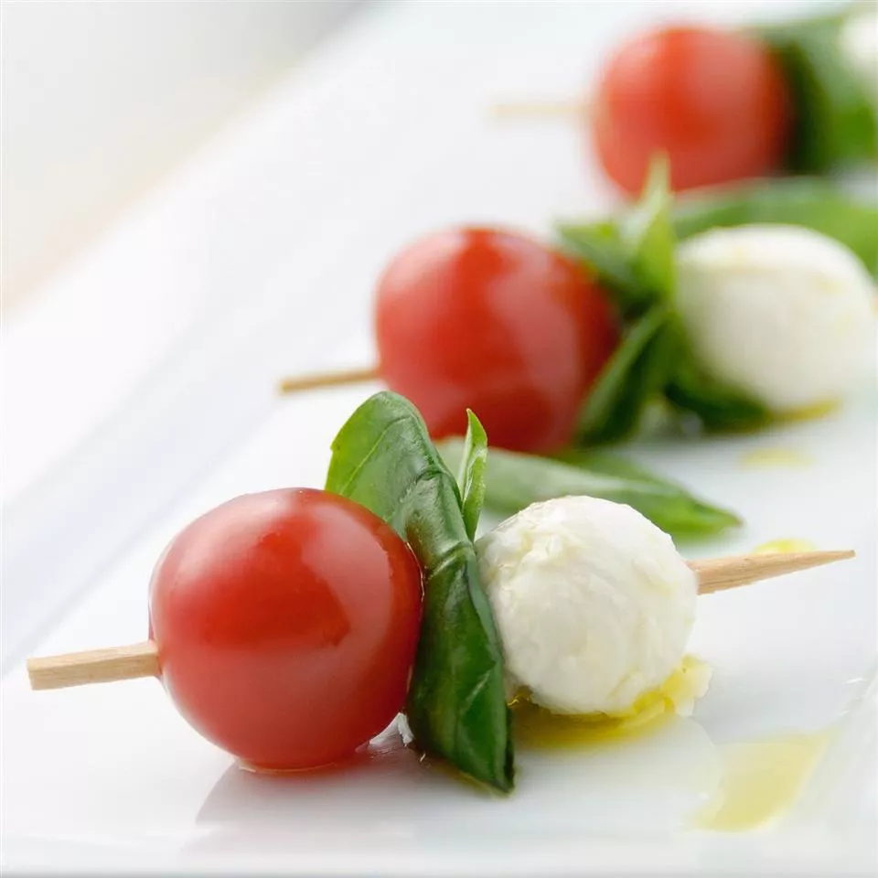

Caprese on a Stick

Description
This is a great, easy finger appetizer. I came up with it because I love Caprese but it was difficult to serve at large parties. Putting the same ingredients on a toothpick yielded great results.
Ingredients
- 1 pint cherry tomatoes, halved
- 1 (.6 ounce) package fresh basil leaves
- 1 (16 ounce) package small fresh mozzarella balls
- toothpicks
- 3 tablespoons olive oil
- salt and pepper to taste
Steps
- Thread a tomato half, a small piece of basil leaf, and a mozzarella ball onto toothpicks until all ingredients are used. Drizzle the olive oil over the tomato, cheese and basil, leaving the end of the toothpick clean. Sprinkle with salt and pepper. Serve immediately.
Home